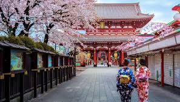
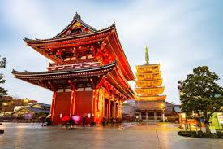

Tóquio
Bem-vindo à página de Tóquio! Aqui você encontrará informações sobre locais para visitar e curiosidades sobre a cidade.
Locais para Visitar
-

Monte Fúji -
 Templo Senso-ji -
Shibuya Crossing -
 Palácio Imperial
Curiosidades
Tóquio é conhecida por sua mistura única de tradição e modernidade, com arranha-céus futuristas ao lado de templos históricos.